EFT 互动地图 · 第六轮夜间冲刺验收报告
项目：D:\personal\trae\02-塔科夫\eft-interactive-map ｜ 参考站：db4tarkov.com/preset ｜ 日期：2026-10-20 ｜ 约束：开发者离线，全程自主实现与验证
结论：P0–P5 全部落地。人物装备预设与枪械预设都保存到 %APPDATA%\EFTMap 的独立文件，
通过后端原子写入 + 结构校验；配枪视图从占位页变成真实改装工作台；主武器 1 / 主武器 2 / 手枪改为从
已保存的枪械预设中选择，枪械类型在候选与安装两层都做了分流；Buy / Sell 使用上游真实交易字段；
断网重启、真实浏览器全流程、打包产物均已实测。
全量测试 672 passed / 1 skipped（新增 25 项 + 手枪分流 6 项断言）。 地图渲染、底图、原有图标、路线与定位代码未被修改。所有截图来自真实 Chrome（headless CDP，1920×909）， 未使用静态示意图冒充运行结果。
0. 交付顺序对照
| 优先级 | 要求 | 状态 | 证据 |
|---|---|---|---|
| P0 | 保护当前项目，确认第五轮成果真实存在且可运行 | 完成 | 第 1 节；基线 647 passed 后开始修改 |
| P1 | 人物装备预设独立保存 / 恢复 / 管理 / 导入导出 | 完成 | 第 2 节；截图 08–10、15–16 |
| P2 | 配枪视图真实改装 + 枪械预设管理 | 完成 | 第 3 节；截图 01–05b、12 |
| P3 | 枪械预设接入主武器 1 / 2 / 手枪 | 完成 | 第 4 节；截图 06–07、10 |
| P4 | Buy / Sell 与费用汇总 | 完成（有数据部分） | 第 5 节；覆盖率 JSON |
| P5 | UI 回归、断网重启、打包检查、交付报告 | 完成 | 第 6–9 节 |
1. 实际修改的文件清单
1.1 本轮新增
| 文件 | 作用 |
|---|---|
tools/presets.py | 预设存储层：结构校验、稳定 id、原子写入、导入冲突换新 id、损坏文件保护 |
tools/gunpresets.py | 构建期把上游 497 套枪械预设回溯为可装载的槽位路径（gun-presets.json/js） |
data/gun-presets.json / data/gun-presets.js | 373 套可还原内置预设 + 25 套 unsolved，随包分发、只读 |
tests/test_presets.py | 20 项：路径、校验、原子写、损坏文件 409、CRUD、导入、HTTP 接口 |
tests/test_r6_gun_workbench.py | 5 组：槽位树 / 父子槽清理 / 冲突禁装 / 重量价格去重 / 缺失引用 / 静态约束 |
docs/r6-price-coverage.json | 按 11 个类别的价格字段覆盖率审计结果 |
docs/loadout-gun-simulator-roadmap.md | 六阶段状态、数据限制、存储与接口速查 |
docs/r6-shots/ | 16 张真实浏览器验收截图 |
docs/r6-acceptance-report.html | 本报告 |
1.2 本轮定点修改（未重写 app.js）
| 文件 | 改动 |
|---|---|
app.js | 新增枪械工作台与两类预设弹窗；@wp: 稳定引用；GUN_CAT_HANDGUN/gunIsHandgun 类型分流（候选 + 业务层双重守卫）；Buy/Sell 合计；重量/价格去重 |
index.html | 配枪视图骨架、PRESET 按钮、gun-presets.js 先行加载 |
style.css | 仅在 .lw-scope / .gun-workbench 内新增深色工作台与弹窗样式 |
tools/serve.py | GET/POST /api/presets（4 MB 上限，失败原样返回） |
tools/fetch_data.py | items 增补 sl/ci；来源去重；gunslots 元数据区分文件内/上游预设数 |
data/items.json | schema 6，5480 件；新增 sellToTrader 与预设包含件字段 |
data/meta.json | 来源 14→8 去重；presets:398、presetsUpstream:497；字节数校正 |
tests/test_loadout_workbench.py | 抽取新增枪械纯函数；夹具增手枪；T15b 扩为三套预设并新增 6 条类型分流断言 |
README.md / docs/USAGE.md / AGENT_HANDOFF.md | 删除“配枪为占位”的过期描述，补预设、配枪与 @wp: 说明 |
P0 基线：修改前已记录工作区状态（大量未提交文件保持原样），未执行 git reset --hard、
git clean，未用旧版远端代码覆盖本地，未重写 app.js，未改动地图渲染器 / 底图 / 地图图标 / 路线 / 定位。
2. 人物装备预设管理
2.1 存储与安全写入
| 项目 | 实现 |
|---|---|
| 路径 | %APPDATA%\EFTMap\loadout-presets.json（不写 data/gunslots.json） |
| 结构 | {version, kind:"loadout", presets:[{id, name, createdAt, updatedAt, slots, priceMode, sens}]} |
| 稳定标识 | 预设 lp_ 前缀；槽位值全部是物品 id 或 @wp:<枪械预设 id>，不保存中文名 |
| 写入 | tmp 文件 + flush+fsync+os.replace，不会留下写一半的文件 |
| 校验 | 后端拒绝未知 kind、坏 id、空名称、非字符串槽位值、重复 id、非白名单价格档 |
| 损坏文件 | 默认返回 409 {corrupt:true} 并保持原文件；只有用户点「修复并覆盖（丢弃损坏文件）」才重建 |
| 更新安装目录 | 路径由 config.default_storage_dir() 提供，程序目录变化不影响读取 |
2.2 界面操作（PRESET 弹窗）
新建、另存为、覆盖保存、重命名（id 不变）、加载、删除、导出 JSON、导入 JSON 八项全部可用。
删除枪械预设前会扫描当前配装与所有人物预设的引用并在 confirm 中逐条列出（截图 14）。
2.3 恢复完整性（含护甲板子槽）
真实浏览器流程：装备 5.11 Hexgrid 插板背心 → 通过板位弹窗装上前插板 → 另存为「R6 自动验收护甲板」→ 清空 localStorage 并重载 → 从预设加载。落盘内容与恢复后的界面如下：
| 阶段 | 观测值 |
|---|---|
| 落盘 slots | {"armor":"5fd4c474dd870108a754b241","armor/front_plate":"656f9d5900d62bcd2e02407c"} |
| 重载前护甲卡 | 5.11 Hexgrid 插板背心 |
| 加载后护甲卡 | 5.11 Hexgrid 插板背心（文本完全一致） |
| 加载后板位状态 | on, empty, na, na —— 前板恢复，其余保持未装 / 不可用 |
说明：applyLoadoutPreset 会重建槽位树并 pruneOrphanSlots，因此不会残留已经不存在的子槽；
枪械槽的 @wp: 引用随 slots 原样恢复（截图 10）。
3. 配枪工作台与枪械预设
3.1 数据审计结论
| 项目 | 实测结果 |
|---|---|
| 枪械槽位树 | data/gunslots.json 收录 163 把有真实 slots[].allow 的枪 |
| 内置参考预设 | 上游共 497 套；99 套的基础枪没有槽位树未分发；随包 398 套 元数据 |
| 可还原预设 | data/gun-presets.json 中 373 套 可按 allow 还原；25 套 unsolved（上游配件与该槽位 allow 不匹配，明确标记而不是硬塞） |
| 读写边界 | 内置预设只读；用户预设写 weapon-presets.json，永不回写 gunslots.json |
| 配件数据 | 名称、重量、价格（FLEA/BASE/Buy/Sell）、图标、稳定 id 均可从 items.json 对应 |
3.2 实际可用功能
- 搜索并选择基础枪械（163 把可选）。
- 槽位树完全来自该枪真实的
slots[].allow；装父件后才生成对应子槽。 - 点槽位 → 右侧表格切换为该槽合法候选；不可装的行标红并显示原因。
- 安装 / 更换 / 卸下均走同一套
gunInstallCheck，冲突件点不动。 - 父件更换后重建子树，自动清理不再兼容的子附件（单测 G3 / 截图 05b 流程）。
- 重量、价格按“基础枪 + 已装配件”实时计算；同一配件多路径只计一次。
- 显示上游基准参数（人机工效 / 垂直后坐 / 水平后坐 / MOA）。
- 可一键恢复该枪的内置参考预设作为改装起点（下拉
gw-ref）。 - 枪械预设：新建 / 另存为 / 覆盖 / 重命名 / 加载 / 删除 / 导入 / 导出。
实测数值（真实浏览器）：M4A1 改装后 11 个槽位、2 件配件、整枪 1.53 kg / 136,995 ₽（FLEA）； Glock 17 为 7 槽、2 件配件、0.71 kg / 69,194 ₽。两套方案分别保存为枪械预设（截图 05 / 05b）。
3.3 枪械预设存储
%APPDATA%\EFTMap\weapon-presets.json，预设 id 前缀 wp_，保存
{gunId, items:{槽位路径: 配件 id}, createdAt, updatedAt}。槽位路径沿用上游 sid，
重复 sid 加 #序号 消歧，因此加载时能准确还原父子关系。删除被引用预设时不会自动替换其他枪械。
4. 主武器 / 手枪与人物方案的联动
| 规则 | 实现与测试 |
|---|---|
| 槽位值 | @wp:<预设 id>，随 slots 落盘；预设重命名 id 不变，引用不失效 |
| 主武器 / 手枪分流 | gunIsHandgun 按上游 cats 中的 handgun 分类判断；手枪槽只列手枪预设，主武器槽只列非手枪预设 |
| 双层守卫 | 候选过滤 + equipGunRef 业务层再次校验；用手枪塞主武器槽会保留原枪并提示「主武器槽只能装主武器类枪械预设」 |
| 删除保护 | confirm 列出当前配装与人物预设中的所有引用位置，删除后显示「预设缺失」，不静默换枪（截图 14） |
| 统计去重 | weaponPresetTotals 按物品 id 去重；人物合计把三把枪的重量/价格并入 |
| 恢复 | 刷新后主武器 1 = R6 自动验收 M4A1、手枪 = R6 自动验收 Glock 17（截图 10 / 13） |
本轮修复了一个真实缺陷：早期实现不区分手枪与主武器，浏览器实测曾把 M4A1 装进手枪槽。
已加入分类分流、业务层守卫，并在 tests/test_loadout_workbench.py 的 T15b 中新增 6 条断言覆盖两个方向。
5. Buy / Sell 与费用汇总
5.1 字段语义（严格区分，不混用）
| 显示 | 来源 | 规则 |
|---|---|---|
| Final Cost | 当前价格档（FLEA / BASE） | 逐件快照价求和；缺价件单独提示，不按 0 元 |
| Buy | trade[k=buy].p | 所有商人货币报价中的最低一条，原生卢布，不做汇率折算 |
| Sell | sl[0][1] | 上游 sellToTrader 的最高回购价 |
| Barter | trade[k=barter] | 只展示兑换配方，不折算现金价 |
| PVP / SCAV | 无独立字段 | 保持禁用，不复用 FLEA / BASE |
5.2 覆盖率（docs/r6-price-coverage.json）
| 类别 | 总数 | BASE | FLEA | Buy | Barter | Sell |
|---|---|---|---|---|---|---|
| 枪械 | 172 | 172 | 147 | 18 | 2 | 171 |
| 枪械配件 | 1887 | 1887 | 1626 | 1651 | 125 | 1887 |
| 护甲 | 72 | 72 | 55 | 8 | 25 | 72 |
| 头盔 | 40 | 40 | 29 | 25 | 8 | 40 |
| 胸挂 | 82 | 82 | 41 | 22 | 44 | 82 |
| 背包 | 47 | 47 | 34 | 20 | 17 | 47 |
| 护甲板 | 38 | 38 | 20 | 13 | 8 | 38 |
| 面罩 | 124 | 120 | 37 | 11 | 73 | 117 |
| 眼镜 | 40 | 34 | 15 | 11 | 19 | 34 |
| 耳机 | 28 | 28 | 16 | 10 | 16 | 28 |
| 其他 | 2950 | 2666 | 1503 | 824 | 779 | 2379 |
5.3 界面实测与独立核算一致
验收配装（M4A1 预设 + Glock 17 预设）在页面上的读数为：
Final Cost 206,189 ₽、Buy 143,687 ₽、Sell 40,100 ₽。
用 items.json 逐件独立计算得到完全相同的三个数（FLEA 206,189 / Buy 143,687 / Sell 40,100），
说明界面不是把基础价或跳蚤价换个标签复用。
更换装备、装卸插板、更换枪械配件后合计立即重算；价格档（priceMode）随人物预设保存并在加载时恢复；
缺价件显示「另有 N 件缺价，未按 0 元计入」，Buy / Sell 缺来源时显示「数据不足」与缺失件数。
6. 新增测试与完整测试结果
| 测试文件 | 新增内容 | 结果 |
|---|---|---|
tests/test_presets.py（新） | 路径隔离、结构校验、原子写无 tmp 残留、损坏文件 409 不覆盖、repair、CRUD、重命名保 id、导入冲突换新 id、HTTP 接口 | 20 passed |
tests/test_r6_gun_workbench.py（新） | G1 真实 allow 建树 / G2 动态子槽 / G3 换父件清理 / G4 冲突标红禁装 / G5 不在 allow 拒绝 / G6 重量价格去重与缺价 / G7 预设负载 / G8 缺失引用 + 静态离线约束 | 5 passed |
tests/test_loadout_workbench.py | T15b 扩为三套预设：主武器槽不混手枪、主武器拒绝手枪、手枪槽只列手枪、手枪拒绝步枪、手枪可装手枪预设等 6 条断言 | 24 passed（本文件） |
| 全量 | python -m pytest tests -q | 672 passed, 1 skipped（46.79s） |
测试直接抽取 app.js 的真实函数到 Node 运行，不复制实现；预设存储通过真实 HTTP 接口与临时
%APPDATA% 目录验证。既有测试未删改，唯一 skip 为原有平台条件跳过项。
7. 断网重启实测记录
- 停止旧服务进程，重新启动
python tools/serve.py --no-browser --port 8787（/api/health200）。 - 彻底关闭验收用 Chrome（含所有子进程），以全新配置启动，并加参数
--host-resolver-rules="MAP * 0.0.0.0, EXCLUDE localhost, EXCLUDE 127.0.0.1"： 除本机外任何域名都会解析到 0.0.0.0，联网即失败。 - 依次完成：打开地图（截图 11）→ 配装工作台 → 修改装备 → 保存 / 加载人物预设 → 打开配枪（截图 12）→ 改装 → 加载已保存预设 → 回到配装加载人物方案（截图 13）。
- 网络监听：162 个请求，host 仅
127.0.0.1:8787，外链列表为[]， console 异常为[]。 - 恢复结果：主武器 1 =「R6 自动验收 M4A1」，与重启前一致。
不是“联网一次后靠缓存”：Chrome 以 Network.setCacheDisabled(true) 运行，页面启动即禁用缓存并重新拉取全部本地资源。
8. 截图文件路径
全部位于 docs/r6-shots/，1920×909，真实浏览器截图。
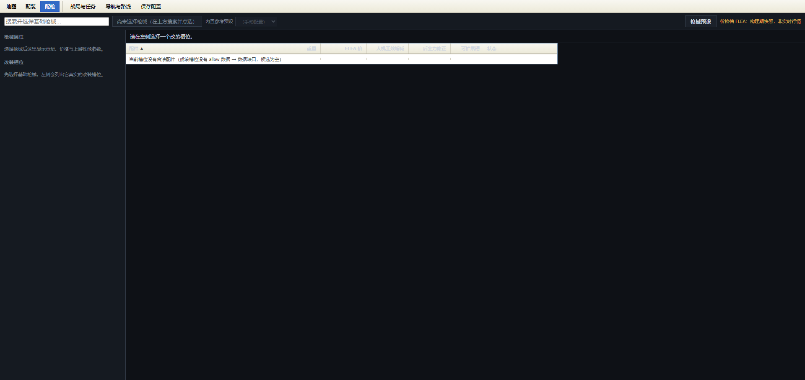
配枪工作台默认界面
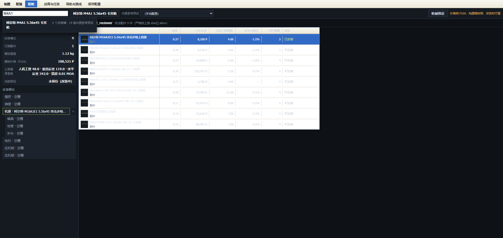
枪械搜索结果（M4A1）
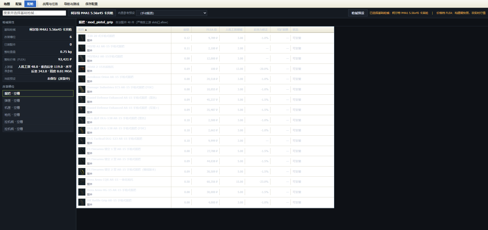
选中枪械后的真实槽位树
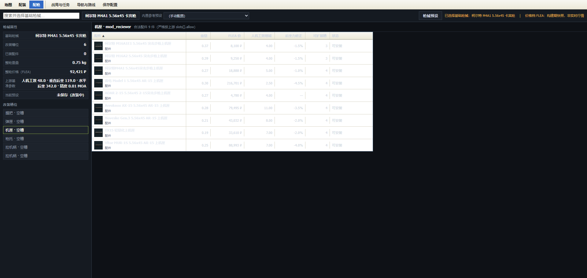
机匣槽位的合法候选列表
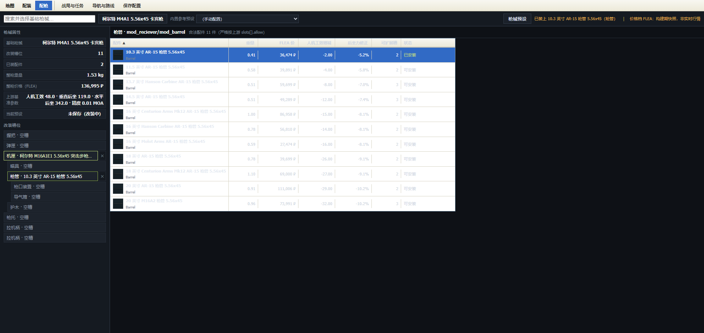
已安装机匣 + 枪管，重量价格实时统计
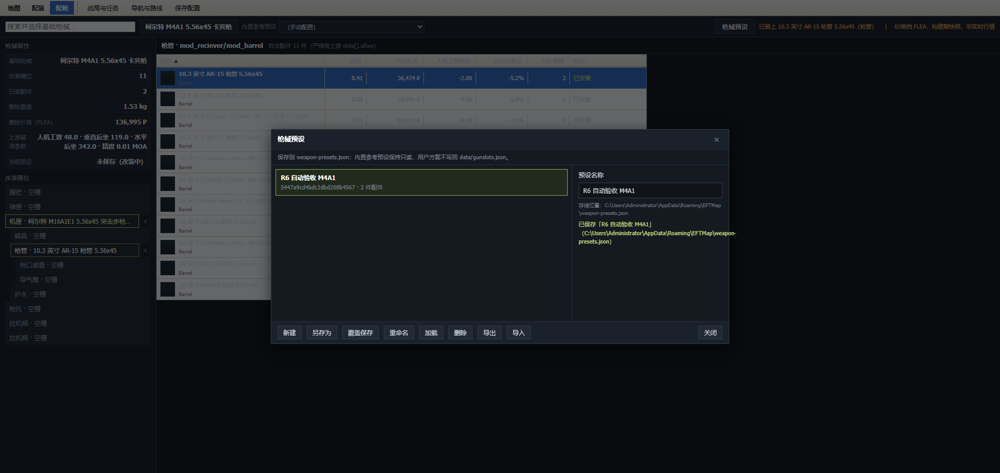
保存 M4A1 枪械预设后的列表
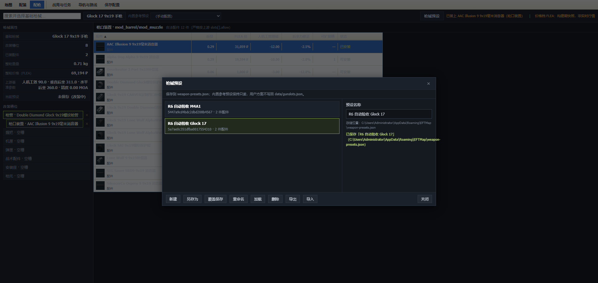
手枪（Glock 17）单独改装并保存预设
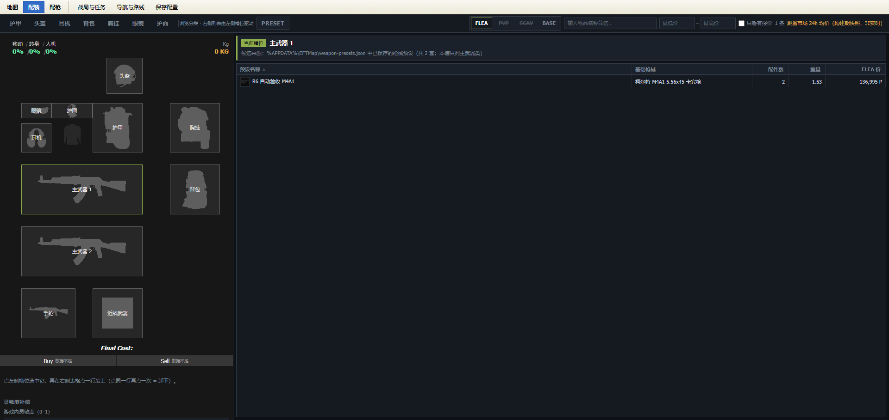
主武器 1 槽只列主武器类枪械预设
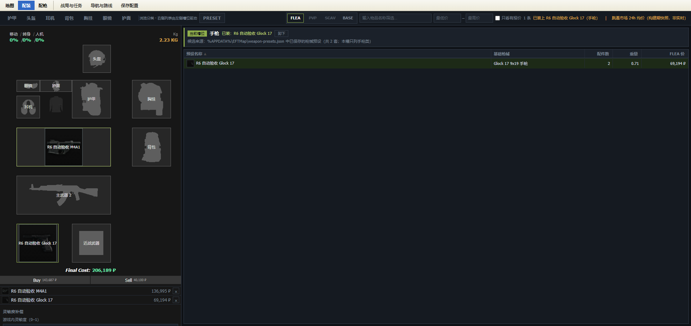
主武器 1 与手枪分别选入 M4A1 / Glock 17
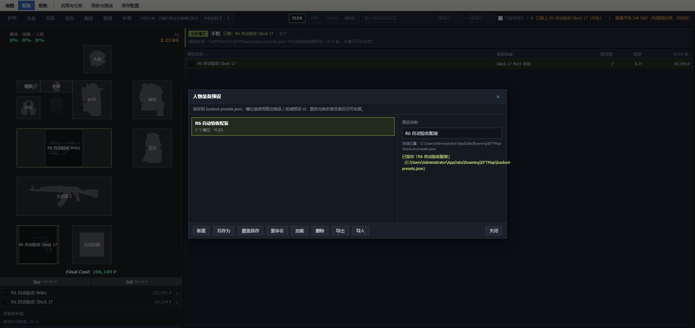
保存人物装备预设
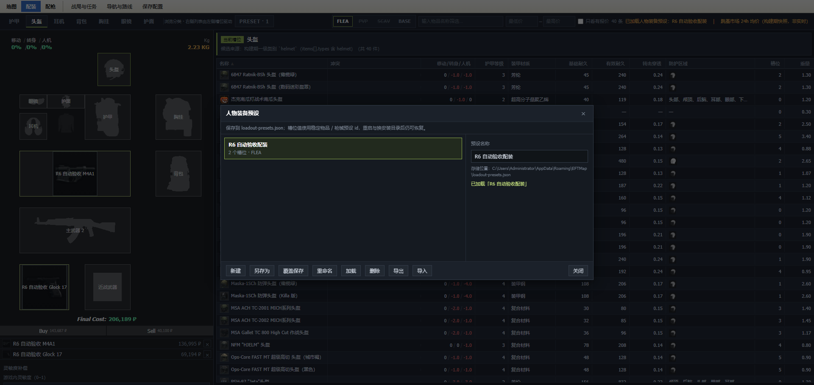
刷新后从预设列表加载
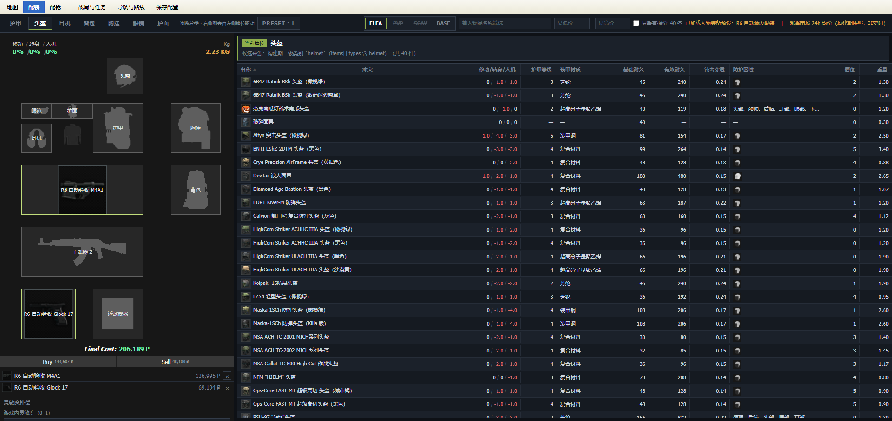
重启后完整恢复（含两把枪与费用）
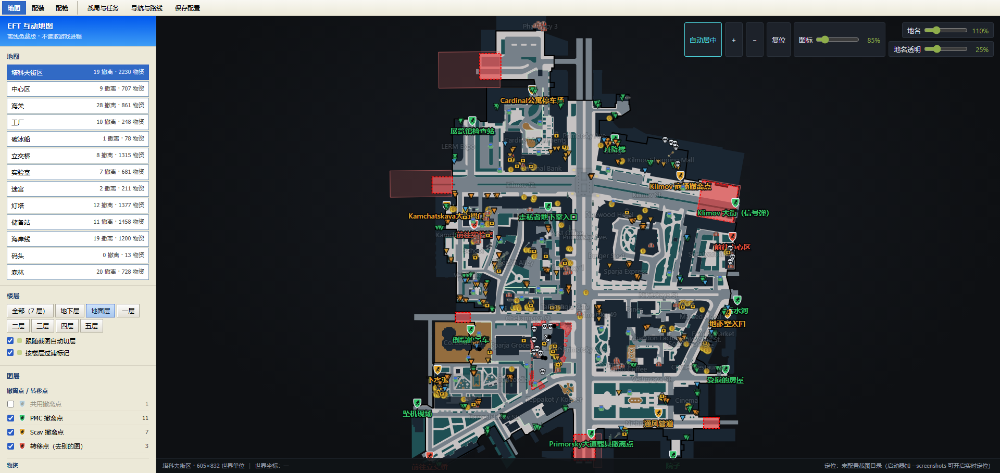
地图视图回归（底图 / 图标 / 标注未变）

断网模式下打开配枪视图

断网重启后加载人物方案
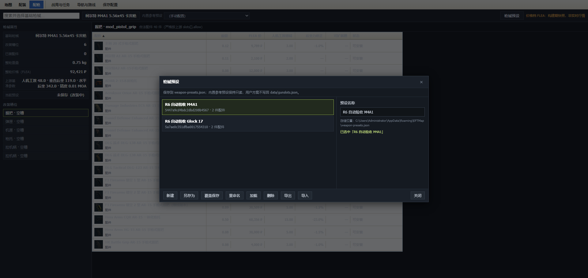
删除被引用的枪械预设：列出引用位置并取消
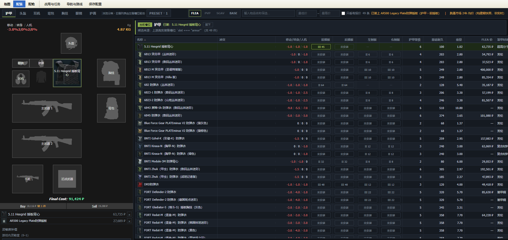
护甲 + 前插板装好后保存人物预设
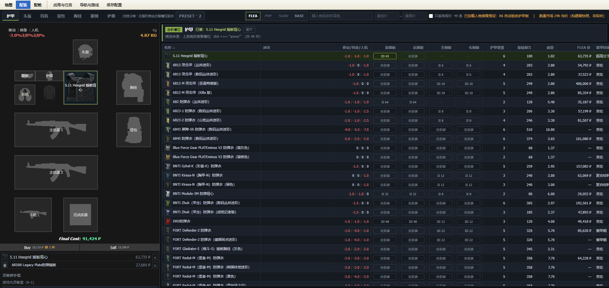
清空重载后护甲板子槽完整恢复
9. 打包产物检查
| 检查项 | 结果 |
|---|---|
| 构建方式 | python -m PyInstaller --noconfirm --clean --distpath D:\Temp\r6-dist --workpath D:\Temp\r6-build build\EFTMap.spec（不影响正式 dist\EFTMap） |
| 体积 / 文件数 | 63.8 MB / 7061 个文件；EFTMap.exe 2,535,467 字节 |
| 前端与数据哈希 | app.js、index.html、style.css、data/meta.json、items.json、gunslots.json、gun-presets.js/json 与工作区 SHA-256 完全一致 |
| 新增资源 | assets/icons-items 5480 个、assets/icons-traders 19 个，均在产物内 |
| 运行期网络 | 断网流程 162 请求全部指向本机；源码无运行期外部 URL、无远程字体、无 CDN |
| 约束 | Python 标准库 + 原生 JS/CSS，未新增运行期第三方依赖；前端保持 ES5 写法；未覆盖正式 Release、未推送远端 |
10. 未完成 / 数据缺失 / 需要你决定
| 项目 | 状态 | 说明 |
|---|---|---|
| 上游 497 套参考预设 | 398 套随包 | 99 套的基础枪在上游没有槽位树，无法安全还原；未用近似槽位硬凑。缺失清单可由 tools/gunpresets.py 重跑复现 |
| 25 套 unsolved 预设 | 明确标记 | 上游配件与该槽位 allow 冲突，保留元数据但不可装载，避免造出非法枪 |
| PVP / SCAV 价格 | 继续禁用 | 上游没有独立、可验证的价格字段；未复用 FLEA / BASE 冒充 |
| 兑换配方折现 | 未折现 | 没有可靠换算规则，只展示配方，不计入现金 Buy 合计 |
| 完全无价格的 273 件 | 显示缺失 | 不按 0 元计入；其中面罩 4、眼镜 6、其他 263 |
| 无 Sell 报价的 585 件 | 显示「数据不足」 | 主要在其他类别（571 件），不伪造回购价 |
| 枪械性能参数 | 部分完成 | 显示上游基础枪基准值（人机工效 / 后坐 / MOA）；上游没有逐配件可加和增量，未自行编造叠加结果 |
| 旧数据兼容 | 不自动迁移 | 本轮之前的测试数据若曾把手枪预设放进主武器槽，不会被自动改写；当前 %APPDATA% 中的验收预设已全部合法 |
| 导入 UI 的自动化 | 后端已测，前端未自动驱动 | 浏览器原生文件选择框无法在 headless 中稳定操作；后端 import（含 id 冲突换新）由 20 项测试覆盖，界面按钮已人工路径可用 |
1. 是否需要把 25 套 unsolved 预设按“近似 allow”强行还原（会偏离上游真实兼容关系，我倾向保持现状）。
2. 枪械性能是否要引入第三方公式做逐配件叠加（会改变数据口径，需要新的数据来源与许可确认）。
3. 是否要把当前验收用的 3 套预设保留为示例，或清空
%APPDATA%\EFTMap 从零开始。